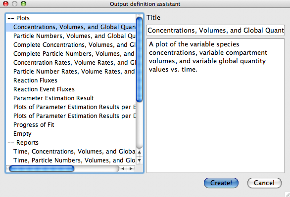

The output assistant presents the easiest way to generate your own output definitions which you can later adapt to your wishes using the techniques described in
Manual Definition. Almost all task dialogs in COPASI have a button at the lower right that is labeled Output Assistant. If you click on this button, a new dialog will open with a list of predefined output definitions on the left. If you select one of the output definitions from the list, you will get a short description of what the output does on the right side of the dialog. Above the description is the title of the output definition. This title can be changed in order to be able to identify the different output definitions in case you are planning on creating more than one output definition of a certain type. Using this dialog both plots and reports can be created.
Creating an instance of the selected output objects is as easy as clicking on Create! at the bottom of the dialog. Once you clicked this button, a new report or plot, depending on what you selected in the dialog, will appear in the corresponding branch of the Output section of the model tree. The Output branch is the second to last branch in the tree on the left. The name of the output definitions will be the title of the object which you selected from the list. If another output definition in this section already has the same name, a postfix will be appended to the name. The so created output can now be edited or deleted. If the newly created output is a report it will automatically be selected as the active report for the current task. You then still have to select a filename for the output using the Report button. This is described in the sections about the specific calculation tasks below. How output definitions are created, edit and deleted manually is the topic of the next sections.
|  |
| Output Assistant Window |